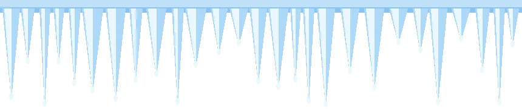
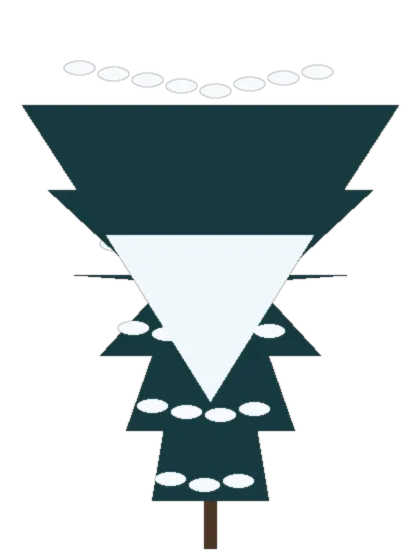
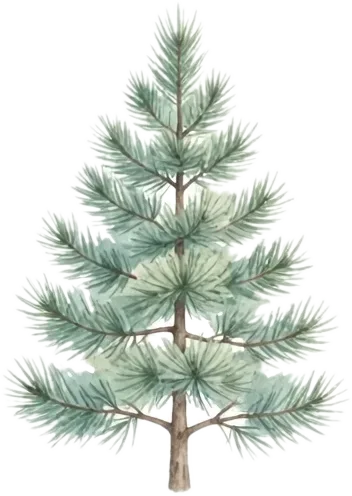
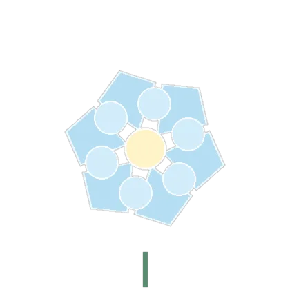
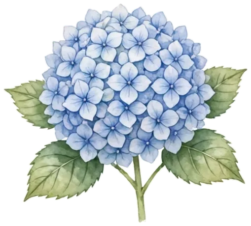
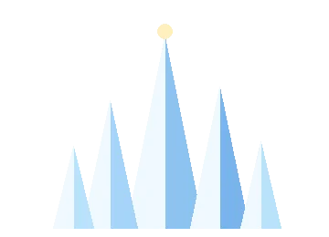
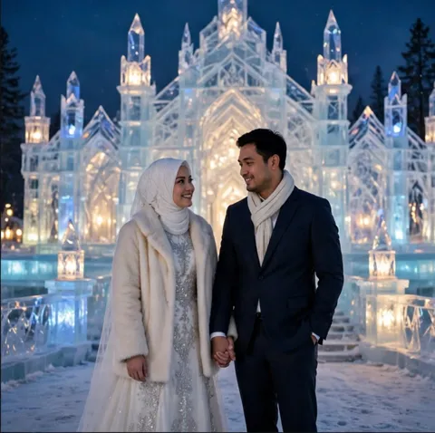
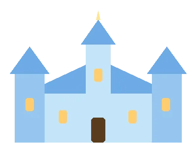

Langkah Pertama di Salju
Dipertemukan dalam sebuah acara kampus di penghujung tahun, percakapan pertama kami sesederhana dua cangkir cokelat hangat — dan sejak itu, musim tak pernah terasa sedingin sebelumnya.


ISTANA ES & AURORA · SABTU, 12 JUNI 2027





The Wedding of
Kepada Yth. Bapak/Ibu/Saudara/i
Tamu Undangan
*Mohon maaf bila terdapat kesalahan penulisan nama & gelar
بِسْمِ اللَّهِ الرَّحْمَٰنِ الرَّحِيمِ
Assalamu’alaikum warahmatullahi wabarakatuh. Dengan memohon rahmat dan ridha Allah SWT, kami bermaksud menyempurnakan separuh agama dalam ikatan suci pernikahan — sehangat cahaya lentera es di tengah malam aurora.
“Dan di antara tanda-tanda (kebesaran)-Nya ialah Dia menciptakan pasangan-pasangan untukmu dari jenismu sendiri, agar kamu cenderung dan merasa tenteram kepadanya, dan Dia menjadikan di antaramu rasa kasih dan sayang.”
— QS. Ar-Rūm: 21
Merupakan kehormatan dan kebahagiaan bagi kami beserta keluarga apabila Bapak/Ibu/Saudara/i berkenan hadir dan memberikan doa restu.
Busana musim dingin yang sama di setiap foto: gaun putih-perak & mantel bulu krem, jas biru tua & syal krem.
Putra dari Bapak H. Bambang Sutrisno
& Ibu Hj. Ratna Dewi

Di depan istana kristal es — awal musim kami.

Alas kayu ukir · cincin es berputar — bola terguncang tiap kali Anda tiba di sini.
Sabtu, 12 Juni 2027 · pukul 08.00 WIB
Sabtu, 12 Juni 2027 · 08.00 – 10.00 WIB
Masjid Agung Al-Azhar
Jakarta Selatan
Sabtu, 12 Juni 2027 · 11.00 – 13.00 WIB
The Ritz-Carlton Jakarta, Pacific Place
Jakarta Selatan

Geser kanan–kiri · ketuk foto untuk memperbesar.
Dipertemukan dalam sebuah acara kampus di penghujung tahun, percakapan pertama kami sesederhana dua cangkir cokelat hangat — dan sejak itu, musim tak pernah terasa sedingin sebelumnya.
Empat tahun merawat jarak dan doa, Fahrezzi mengikat janji dalam acara lamaran keluarga yang hangat. Satu cincin, satu kata “bersedia”, dan dua keluarga yang mulai saling menyapa.
Keluarga Ridwan dan keluarga Sutrisno bertemu dalam silaturahmi yang direncanakan bersama — menyepakati hari, tempat, dan satu hal terpenting: kebahagiaan kedua anak mereka.
Sabtu, 12 Juni 2027 — babak yang kami tulis bersama Anda. Pintu istana terbuka; kami menunggu kehadiran dan doa restu Anda di Jakarta Selatan.
Mohon menghindari gaun putih penuh bagi tamu wanita agar mempelai tetap menjadi bintang saljunya.
Video teaser — contoh. Cuplikan foto-foto tema dengan iringan “Petals on the Stone Floor”.
Bagi yang berhalangan hadir, akad nikah direncanakan disiarkan langsung. Tombol di bawah ini adalah demo — tautan siaran sungguhan akan dibagikan menjelang hari H.
Mode demo — RSVP & ucapan tersimpan hanya di perangkat ini (localStorage), tidak terkirim ke server.
Tunjukkan QR ini saat tiba di venue, atau isi buku tamu digital di bawah.
Tamu Undangan
QR statis menuju halaman undangan ini — pindai untuk membuka & check-in.
Demo — daftar check-in tersimpan hanya di perangkat ini (localStorage).
Doa restu adalah hadiah terindah. Bila berkenan memberi tanda kasih, tersedia saluran contoh berikut.
BCA · a.n. Meyzsa Putri Ananda
1234567890DANA · a.n. Meyzsa Putri Ananda
0812-3456-7890Nomor amplop adalah data contoh (demo).
Meyzsa Putri Ananda
Jl. Contoh Salju No. 12, Kebayoran Baru,
Jakarta Selatan 12120
Alamat contoh untuk keperluan demo tema.
#MeyzsaFahrezzi
Tagar resmi — abadikan momen Anda dan gunakan tagar ini.
Unggah foto momen Anda (contoh — tersimpan hanya di perangkat ini).
Keluarga Besar H. Muhammad Ridwan & Hj. Siti Aminah
Keluarga Besar H. Bambang Sutrisno & Hj. Ratna Dewi
Segenap kerabat & sahabat kedua mempelai
Merupakan kehormatan dan kebahagiaan bagi kami sekeluarga apabila Bapak/Ibu/Saudara/i berkenan hadir dan memberikan doa restu kepada kedua mempelai. Atas kehadiran serta doa yang tulus, kami mengucapkan terima kasih.
Wassalamu’alaikum warahmatullahi wabarakatuh.
Kami yang berbahagia,
Meyzsa & Fahrezzi
beserta keluarga besar kedua mempelai